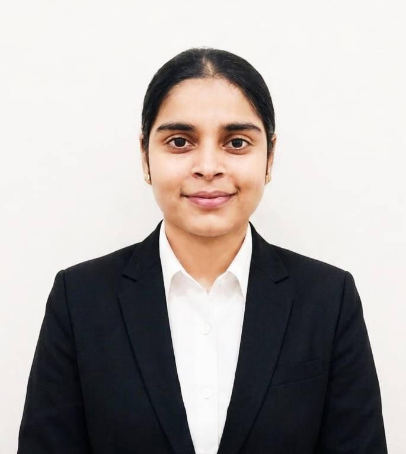

Who I Am
A passionate developer building robust backend systems and exploring the world of full-stack development.

Hi, I'm Diksha Morwal
I am a results-driven BCA student and self-taught Python developer with hands-on experience building full-stack web applications using Flask, FastAPI, and modern front-end technologies. I am proficient in deploying containerised services with Docker, configuring secure tunnels with Cloudflare and Tailscale, and integrating REST APIs.
I am comfortable working on Linux environments and managing version-controlled codebases via GitHub. I am seeking a backend or web developer role where I can contribute practical skills and continue growing as an engineer.
Currently in my 2nd year of BCA at Amity University, Noida, I actively learn system design fundamentals, database optimisation, and cloud deployment. I have a strong interest in AI-integrated applications and healthcare technology.
My Academic Journey
Bachelor of Computer Applications (BCA)
Pursuing a comprehensive degree in Computer Applications with focus on programming, database management, and software development.
Class XII — CBSE Board
Completed secondary education with a strong foundation in mathematics and computer science.
Professional Credentials
Programming in Python with AI
Internshala
Computer Fundamentals & Office Applications
Computer Course Certificate